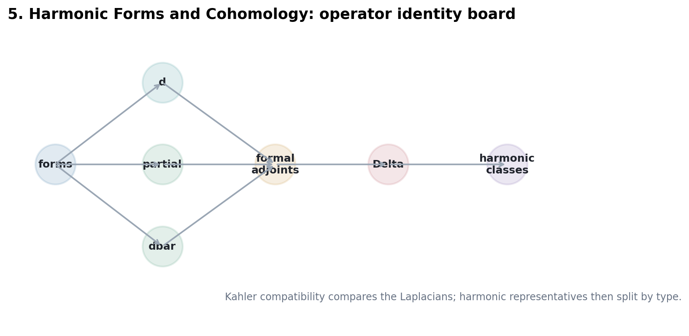
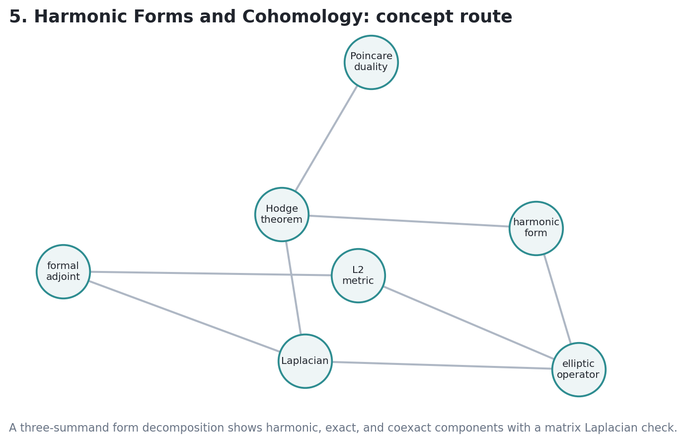

Unit 5. Harmonic Forms and Cohomology
Compact metrics create adjoints; adjoints create Laplacians; ellipticity turns kernels into finite-dimensional spaces; harmonic forms then become canonical representatives of cohomology classes.
On a compact oriented Riemannian manifold \(X\), the metric defines pointwise inner products on \(\Lambda^kT_X^\ast\), and the volume form promotes them to a global pairing.
\((\alpha,\beta)_{L^2}=\int_X(\alpha_x,\beta_x)_x\,\mathrm{Vol}_g\)
The Hodge operator packages the same pairing as an integral of a top-degree form:
\(\alpha\wedge \ast\beta=(\alpha,\beta)_x\,\mathrm{Vol}_g\)
For an operator \(P:C^\infty(E)\to C^\infty(F)\), the formal adjoint \(P^\ast\) is characterized by
\((Pu,v)_{L^2}=(u,P^\ast v)_{L^2}\).
The adjoint is not an abstract inverse. Change the metric or volume form, and the concrete expression for \(P^\ast\) changes.
\(\Delta_d=dd^\ast+d^\ast d\)
On \(k\)-forms, \(\Delta_d\) is second order, self-adjoint, and nonnegative with respect to the \(L^2\) pairing.
\((\Delta_d\alpha,\alpha)=\|d\alpha\|^2+\|d^\ast\alpha\|^2\)
Thus \(\Delta_d\alpha=0\) exactly when \(d\alpha=0\) and \(d^\ast\alpha=0\).

Generated chapter artifact: the operator identities used as a finite inspection model.
\(\mathcal H^k_d=\ker(\Delta_d:A^k\to A^k)\)
Closed and coclosed \(k\)-forms.
\(\mathcal H^{p,q}_{\bar\partial}=\ker\Delta_{\bar\partial}\)
Type \((p,q)\) forms controlled by \(\bar\partial\).
\(\mathcal H^{0,q}(E)=\ker\Delta_E\)
Forms with coefficients in a holomorphic vector bundle.
The highest-order part of \(P\) defines \(\sigma_P(\xi)\). Ellipticity asks that this map be injective for every nonzero covector \(\xi\).
\(\sigma_{\Delta}(\xi)(\omega)=-\|\xi\|^2\omega\)
For \(\xi\ne0\), this is scalar multiplication by a nonzero number, hence elliptic.
The space of smooth \(k\)-forms decomposes into harmonic, exact, and coexact summands. Orthogonality comes from the \(L^2\) pairing.
For compact oriented Riemannian \(X\), the natural map
\(\mathcal H^k_d(X)\longrightarrow H^k_{\mathrm{dR}}(X)\)
is an isomorphism.
\(\bar\partial_E:A^{0,q}(E)\to A^{0,q+1}(E)\)
Hermitian metrics on \(X\) and \(E\) define \(\bar\partial_E^\ast\) and \(\Delta_E=\bar\partial_E\bar\partial_E^\ast+\bar\partial_E^\ast\bar\partial_E\).
\(\mathcal H^{0,q}(E)\cong H^q(X,E)\)
Thus sheaf cohomology becomes computable by smooth bundle-valued forms.
| Degree | Hodge Row | Betti Number |
|---|---|---|
| 0 | 1 | 1 |
| 1 | 1 1 | 2 |
| 2 | 1 6 1 | 8 |
| 3 | 1 1 | 2 |
| 4 | 1 | 1 |
Notebook ledger from the chapter artifacts; total toy rank \(=14\).
If \(P\) is elliptic on compact \(X\), then \(\ker P\) is finite-dimensional and the image is closed.
0 boundary-squared norm
\(\lambda_{\min}(\Delta)=1.0\) in the toy positive model.
Hodge symmetry and nested filtration checks pass.
For compact connected oriented \(n\)-manifolds, integration gives
\(H^p(X,\mathbb R)\otimes H^{n-p}(X,\mathbb R)\to\mathbb R\).
Harmonic representatives make nondegeneracy visible through the \(L^2\) pairing.
If \(\alpha\) is nonzero harmonic, pairing with \(\ast\alpha\) detects it by \(\int_X\alpha\wedge\ast\alpha=\|\alpha\|^2\).
\(H^q(X,E)\otimes H^{n-q}(X,E^\ast\otimes K_X)\to\mathbb C\)
The bundle contraction \(E\otimes E^\ast\to\mathcal O_X\) and the canonical bundle \(K_X\) produce a top holomorphic form to integrate.
Represent both classes by \(\bar\partial\)-harmonic forms. Pair them by wedge, contraction, and integration; nondegeneracy follows from the same metric positivity principle.
\(\text{metric}\Rightarrow P^\ast\Rightarrow \Delta\Rightarrow\ker\Delta\Rightarrow H^\bullet\)
Hodge theory turns cohomology into the kernel of a canonical elliptic operator attached to the chosen metric.
Change the inner product in the toy model, recompute the adjoint and Laplacian, and track how the representative moves while the cohomology dimension stays fixed.
